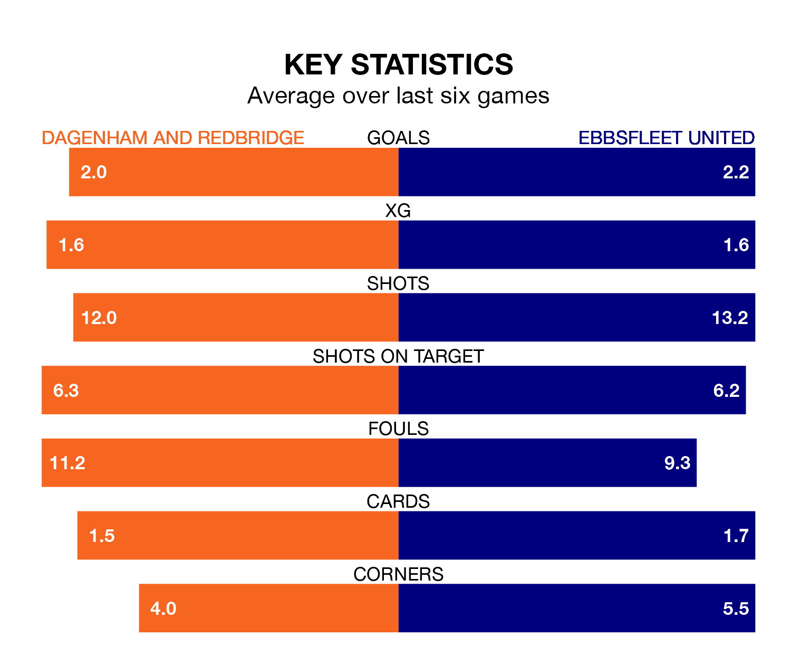

Ebbsfleet United travel to Dagenham and Redbridge on Monday in the National League.
The visitors come into the game on the back of a draw in their last match, having tied with Southend United 1-1 at home, with a goal from Dominic Alfred Poleon.
Dagenham & Redbridge, meanwhile, won their last match, 4-1 against Boreham Wood, with their goals scored by Joshua David Rees, Inih Othneil Effiong and Ryan Hill.
In the last 10 years, Dagenham & Redbridge and Ebbsfleet have played each other on nine occasions. Dagenham & Redbridge won four of them, Ebbsfleet one, and they drew four times.
On average, Dagenham & Redbridge scored 1.7 goals and Ebbsfleet 1.2 in those matches.
Their last meeting was on October 28, when Dagenham & Redbridge won 1-0 away.
With 56 goals in 40 games so far this season, Ebbsfleet are scoring at below the league average rate with 1.4 goals per game. And they are conceding more than average, letting in 67 goals at a rate of 1.7 per game.
Dagenham & Redbridge, meanwhile, are average scorers, with 1.5 goals per game. They have conceded 1.3 goals per game.
United are 19th in the table after 40 games, of which they have won 13 and drawn nine, earning 48 points.
The hosts are seven places ahead of the away side in 12th, with 14 wins and 11 draws putting them on 53 points.
Dagenham & Redbridge are in reasonable form in the National League, with three wins and two draws from their last six games.
With four wins and a draw over that period, Ebbsfleet's form is slightly better – they have taken 13 points from 18, compared to Dagenham & Redbridge's 11.
Updated: 10:31 (UTC), 31/03/24